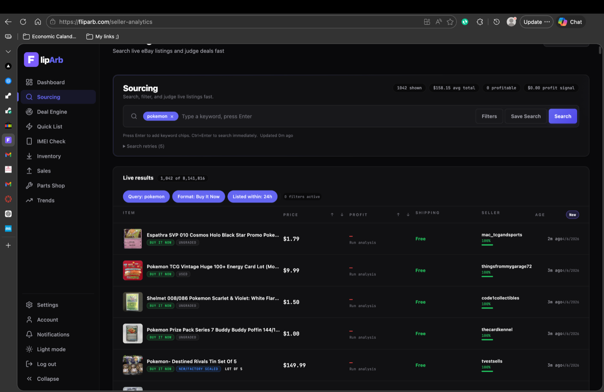
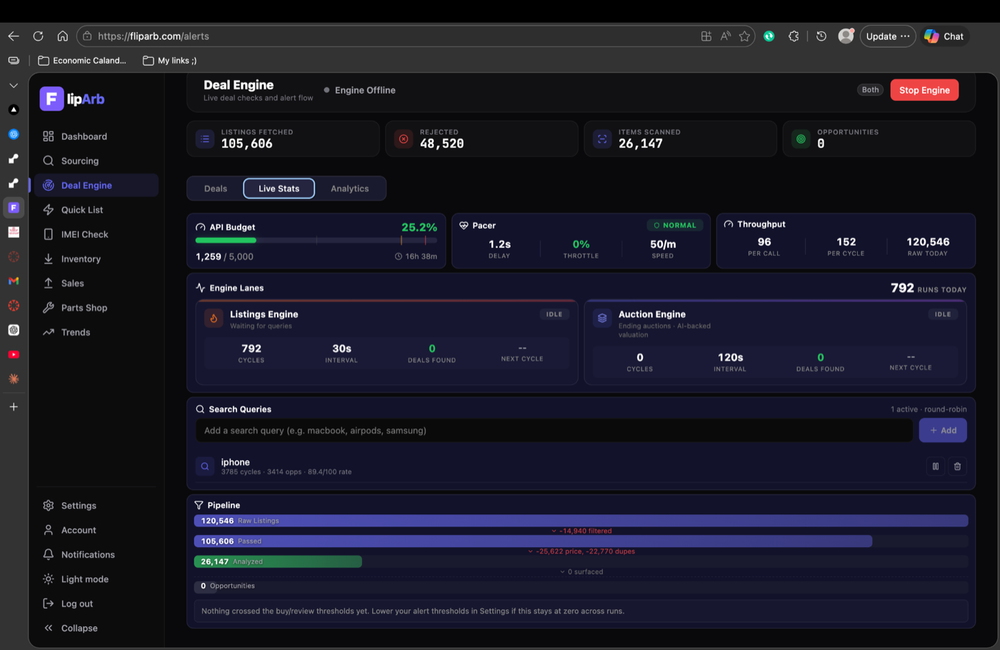

Data visualizations
How FlipArb filtered volume and allocated scarce attention
These charts explain throughput, resource allocation, and adaptive search. Measured session figures are separated from the synthetic learning demonstration.
Scanner resource allocation
Thompson Sampling query allocation
Machine learning
Adaptive Search With Bayesian Learning
FlipArb used Thompson Sampling as a multi armed bandit optimizer. Search strategies compete for limited scanning budget, and evidence updates which strategies deserve more attention.
What a recruiter should understand
- There are multiple search strategies with uncertain performance.
- FlipArb observes which strategies surface useful opportunities.
- Each strategy maintains a Beta distribution that represents current belief.
- High quality opportunities generate stronger rewards.
- Strategies with stronger evidence receive more scanning opportunities.
- Daily decay prevents old winners from dominating permanently.
- Time of day and day of week patterns are also tracked.
- Auction results can feed performance information back into the learning system.
Bayesian update concept
Query posterior = Beta(alpha, beta)
alpha = alpha + reward
beta = beta + 1 minus reward
Selection samples each posterior and allocates budget toward stronger draws.
alpha = alpha + reward
beta = beta + 1 minus reward
Selection samples each posterior and allocates budget toward stronger draws.
This is Bayesian online learning and adaptive search, not a neural network training exercise. OpenAI models were used separately for listing understanding and image or text analysis.
Search strategy
Observation
Reward
Posterior update
Budget reallocation
Next scan cycle
Data pipeline
From marketplace noise to a decision ready opportunity
Cheap checks happen first. Expensive enrichment is reserved for listings that still look viable after screening, deduplication, and device verification.
01Marketplace dataNew listings, auctions, specialty searches, and refresh checks.
02Initial screeningReject accessories, weak prices, and low quality matches early.
03DeduplicationReuse recent analysis and avoid repeat work on known listings.
04Device verificationRule based checks for device signals and listing type.
05AI assisted analysisText and image review for model extraction and red flags.
06Comparable salesEstimate expected resale with recent market evidence.
07Repair pricingEstimate parts cost that affects true purchase economics.
08Device statusIdentify carrier or network lock risk when it matters.
09Profit and ROICombine purchase cost, shipping, tax, parts, and resale.
10Risk and confidenceScore uncertainty, liquidity, freshness, and evidence quality.
11Opportunity classClassify as alert ready, needs review, or rejected.
12Notify and learnSend structured alerts and feed outcomes back to search learning.
Read the deeper technical writeup in ARCHITECTURE.md. Production implementation details remain private.
API integrations
External services that powered enrichment
These were API or service integrations used during development. FlipArb does not claim partnerships with these companies.
eBay
Marketplace search, item details, auctions, and comparable sale workflows.
MobileSentrix
Replacement part pricing used for repair cost analysis.
SickW
Device status information used to identify carrier or network lock risk.
OpenAI
Listing verification, text analysis, image analysis, model extraction, and red flag detection.
Discord
Structured opportunity notifications for fast human review.
Render and Vercel
Backend workers and web deployment during active development. Hosting is currently paused to avoid recurring costs.
Real world validation
The recommendations influenced real purchases
FlipArb was not only a simulated analytics exercise. The system surfaced actual listings, selected devices were purchased, shipped to the creator, moved through the resale workflow, and later sold.
1. Surfaced
The scanner identified listings that passed profitability, confidence, risk, and quality gates.
2. Purchased
Selected devices were bought based on FlipArb opportunity signals.
3. Received
Devices were shipped to the creator for inspection and repair when needed.
4. Resold
Devices later completed the resale workflow that originally motivated the project.
Why this matters for data science: the output influenced real decisions. That created a feedback loop between analytical recommendations and practical outcomes. This portfolio intentionally does not invent profit figures.
Product evidence
Interfaces from the working prototype
Screenshots from the sourcing workflow and Deal Engine monitoring view. Click either image to open it full size.


Analytics case study
The challenge was decision quality under noisy marketplace conditions
FlipArb was not only a coding exercise. It required judgment about noisy data, marketplace economics, API quotas, repair uncertainty, device status, liquidity, comparable sale quality, and time sensitive decisions.
Problem
A listing can look cheap and still be a bad purchase because of repair costs, lock status, weak comps, low liquidity, or poor seller quality.
Data
Marketplace listings, comparable sales, repair part prices, device status checks, listing text, images, and opportunity outcome feedback.
Decision logic
Combine expected resale, projected profit, ROI, confidence, risk, freshness, and liquidity before classifying an opportunity.
Learning approach
Thompson Sampling reallocates scanning budget toward strategies with stronger Bayesian evidence.
Engineering constraints
Official API access, cycle budgets, caching, staged filtering, and throttle monitoring shaped every design choice.
Validation
Real devices were purchased from surfaced listings and later resold through the same operational workflow.
Outcome
A working intelligence pipeline that scanned more than 200,000 listings during development and testing and supported real purchasing decisions.
Lessons learned
Useful analytics comes from staging expensive work, measuring decision quality rather than raw volume, and validating recommendations against real transactions.
Interactive demonstration
See how several signals can change opportunity rank
This simplified public calculator demonstrates risk adjusted profit, confidence, freshness, and liquidity. It mirrors the public scoring demo and is not the full production implementation.
Public demonstration score
0
Risk adjusted profit
Freshness bonus
Explore the repository
Public materials for deeper review
The original production repository remains private. These public materials show the analytical thinking without exposing secrets.
Public analysis notebook
Synthetic dataset exploration covering profitability, risk, liquidity, and opportunity mix.
Scoring demonstration
A readable Python example of combining profit, confidence, risk, freshness, and liquidity.
Thompson Sampling demo
A small Bayesian multi armed bandit example with synthetic query outcomes.
Architecture notes
System design for sourcing, enrichment, scoring, notifications, and learning feedback.
Learning system notes
How Beta posteriors, quality weighted rewards, decay, and time learning fit together.
Full GitHub repository
README, sample data, screenshots, security scope, and demonstration code in one place.